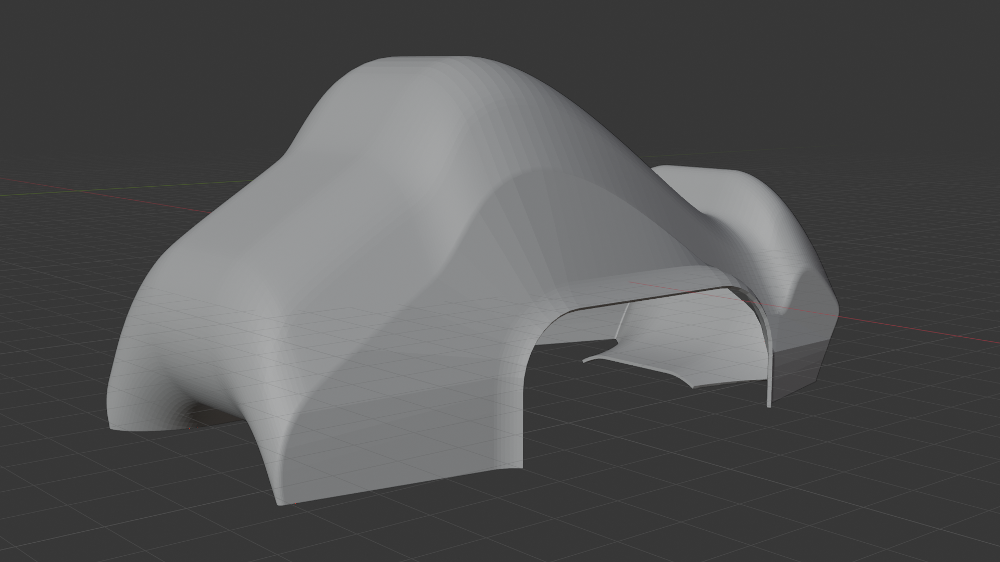
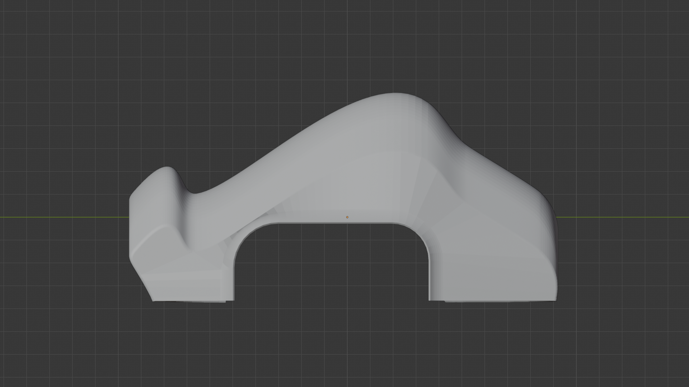
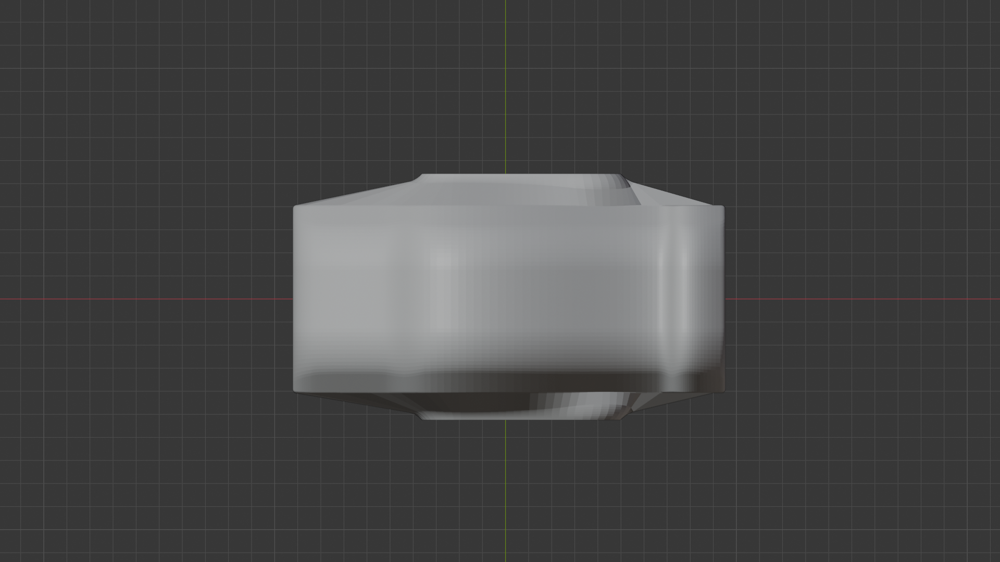
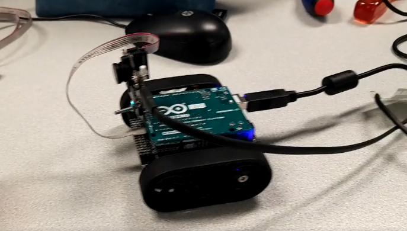
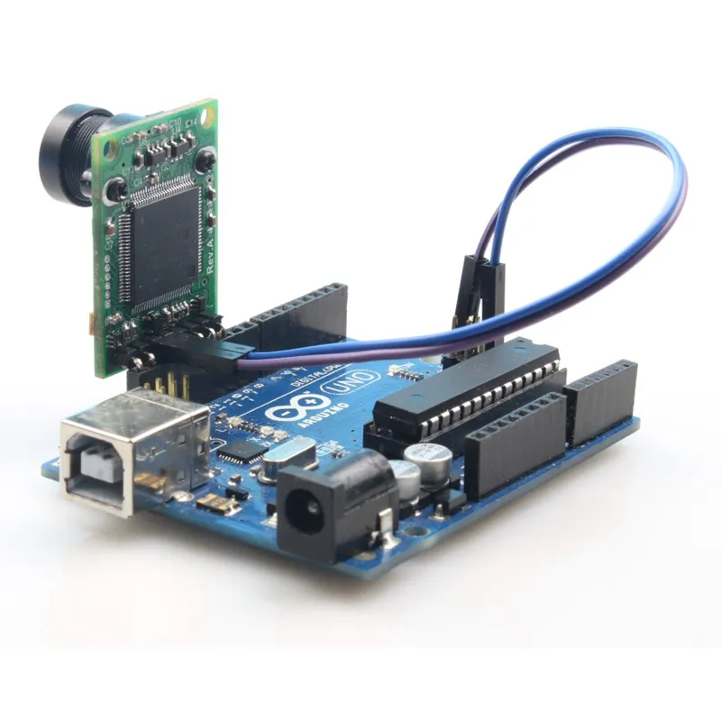
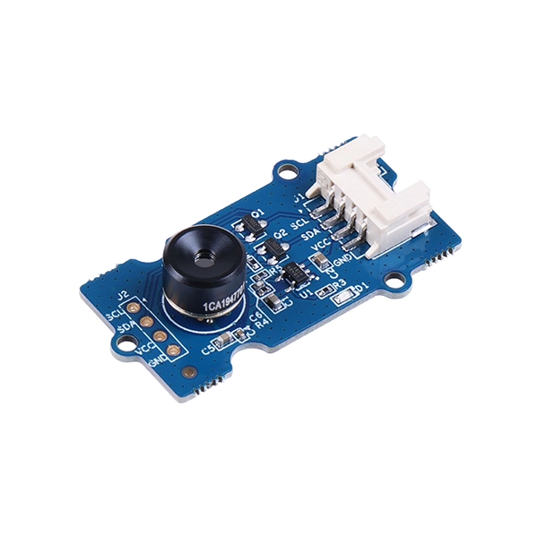
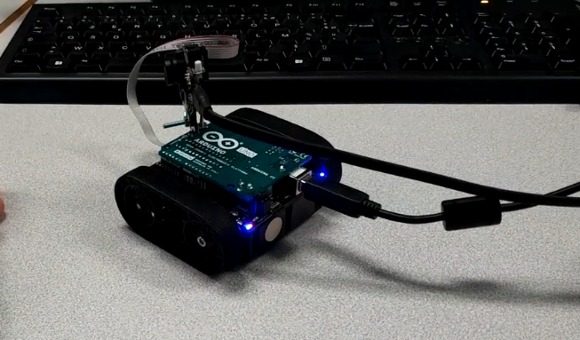

SUPER-CAR
AUTONOME
Un robot mobile piloté par Arduino, capable de naviguer de façon autonome grâce à une caméra de vision embarquée, une modélisation 3D de sa coque réalisée sous Blender, et un code embarqué optimisé en C/C++.
d'équipe
de code
embarquée
modélisée
Présentation du projet
La SF-27 est une voiture robot Arduino conçue pour se déplacer de façon entièrement autonome. Ce projet nous a permis de mobiliser des compétences en électronique, programmation et modélisation 3D.
Étapes clés du projet
Architecture fonctionnelle
Développement technique
Code embarqué, comparatif des capteurs, modélisation 3D et défis rencontrés tout au long du développement.
Nous sommes partis d'un squelette de code fourni par notre enseignant, implémentant uniquement les fonctions d'initialisation des broches et de lecture brute du capteur. Nous avons ensuite développé toute la logique d'évitement, de virage et de recul.
Code final optimisé — SF27_main.ino
// ================================================ // Code virtuel // SF-27 — Voiture Robot Autonome // Autonova Industries · 1ère Sciences de l'Ingénieur // Détection par caméra — Version optimisée 2025–2026 // ================================================ #include <Pixy2.h> // Bibliothèque caméra Pixy2 CMUcam5 #include <AFMotor.h> // Contrôle moteurs Adafruit Motor Shield // ── Paramètres caméra ───────────────────────────── #define CAM_LARGEUR 316 // Résolution horizontale Pixy2 (px) #define CAM_CENTRE 158 // Centre horizontal de l'image #define SEUIL_OBSTACLE 3000 // Aire min. blob = obstacle (px²) #define MARGE_CENTRE 30 // Tolérance gauche/droite (px) #define SIG_OBSTACLE 1 // Signature couleur = obstacle #define SIG_LIGNE 2 // Signature couleur = ligne de guidage // ── Paramètres moteurs ──────────────────────────── #define VITESSE_NORMALE 200 // 0–255 #define VITESSE_LENTE 120 #define VITESSE_RECUL 150 // ── Objets ─────────────────────────────────────── Pixy2 camera; AF_DCMotor moteurGauche(1); // Moteur 1 — roue gauche AF_DCMotor moteurDroit(2); // Moteur 2 — roue droite // ── Variables globales ──────────────────────────── int nbBlocs = 0; // Nombre d'objets détectés bool obstacleDetecte = false; long derniereLecture = 0; // ───────────────────────────────────────────────── // SETUP // ───────────────────────────────────────────────── void setup() { Serial.begin(115200); Serial.println("SF-27 — Démarrage système..."); // Initialisation caméra Pixy2 (SPI par défaut) camera.init(); camera.changeProg("color_connected_components"); Serial.println("Caméra Pixy2 initialisée."); moteurGauche.setSpeed(VITESSE_NORMALE); moteurDroit.setSpeed(VITESSE_NORMALE); // Test séquentiel des actionneurs au démarrage avancer(); delay(300); arreter(); delay(200); Serial.println("Système prêt."); } // ───────────────────────────────────────────────── // BOUCLE PRINCIPALE // ───────────────────────────────────────────────── void loop() { // Acquisition image toutes les 60 ms if (millis() - derniereLecture > 60) { nbBlocs = camera.ccc.getBlocks(255, 255); derniereLecture = millis(); } obstacleDetecte = false; int positionObstacle = -1; // Position X du centre du blob // Parcourir les blobs détectés par la caméra for (int i = 0; i < nbBlocs; i++) { Block bloc = camera.ccc.blocks[i]; // Filtrer par signature et taille minimum if (bloc.m_signature == SIG_OBSTACLE && (int)bloc.m_width * bloc.m_height > SEUIL_OBSTACLE) { obstacleDetecte = true; positionObstacle = bloc.m_x; // Centre X du blob Serial.print("Obstacle — x:"); Serial.print(bloc.m_x); Serial.print(" aire:"); Serial.println(bloc.m_width * bloc.m_height); break; } } // Logique de navigation if (!obstacleDetecte) { // Voie libre — pleine vitesse moteurGauche.setSpeed(VITESSE_NORMALE); moteurDroit.setSpeed(VITESSE_NORMALE); avancer(); } else { // Obstacle détecté — choisir côté à éviter via position caméra eviterObstacle(positionObstacle); } } // ───────────────────────────────────────────────── // FONCTIONS DE CONTRÔLE // ───────────────────────────────────────────────── void avancer() { moteurGauche.run(FORWARD); moteurDroit.run(FORWARD); } void reculer() { moteurGauche.setSpeed(VITESSE_RECUL); moteurDroit.setSpeed(VITESSE_RECUL); moteurGauche.run(BACKWARD); moteurDroit.run(BACKWARD); } void arreter() { moteurGauche.run(RELEASE); moteurDroit.run(RELEASE); } void tournerGauche(int duree) { moteurGauche.run(BACKWARD); moteurDroit.run(FORWARD); delay(duree); } void tournerDroite(int duree) { moteurGauche.run(FORWARD); moteurDroit.run(BACKWARD); delay(duree); } // Évitement basé sur la position du blob dans l'image void eviterObstacle(int xObstacle) { arreter(); delay(200); reculer(); delay(400); arreter(); // L'obstacle est à droite → tourner à gauche, et vice-versa if (xObstacle > CAM_CENTRE + MARGE_CENTRE) { Serial.println("Obstacle droite → virage gauche"); tournerGauche(500); } else if (xObstacle < CAM_CENTRE - MARGE_CENTRE) { Serial.println("Obstacle gauche → virage droite"); tournerDroite(500); } else { // Obstacle centré → recul prolongé puis virage aléatoire Serial.println("Obstacle centré → recul + virage"); reculer(); delay(300); tournerDroite(600); } arreter(); }
Par rapport au code de départ : ajout d'un seuil de ralentissement progressif (SEUIL_LENT), d'une lecture comparée gauche/droite pour choisir la meilleure direction, d'un timer millis() pour éviter de bloquer la boucle avec delay(), et d'une routine de test au démarrage.
Nous avons comparé trois technologies de détection avant de retenir le HC-SR04. Le tableau ci-dessous résume les critères analysés.
| Capteur | Technologie | Portée | Précision | Prix | Statut |
|---|---|---|---|---|---|
| Camera | Lumiere | 2 – 400 cm | ± 3 mm | ~2 € | Retenu ✓ |
| IR Sharp GP2Y0A | Infrarouge | 10 – 80 cm | ± 5 mm | ~4 € | Écarté |
| VL53L0X | ToF (Laser) | 0 – 200 cm | ± 1 mm | ~8 € | Écarté |
| TCRT5000 | Infrarouge réfléchi | 0 – 3 cm | Présence seule | ~0,5 € | Écarté |
Le HC-SR04 offre le meilleur rapport portée/prix pour notre usage. Sa portée de 400 cm est largement suffisante, sa précision de ± 3 mm convient parfaitement pour une détection d'obstacles, et il est directement compatible avec la bibliothèque NewPing sur Arduino sans pont de tension.
La modélisation de la coque a été réalisée sous Blender, logiciel open-source de modélisation 3D. Nous avons opté pour un design inspiré des monoplaces de Formule E, avec des surfaces NURBS et un rendu Cycles.
Rendus 3D de la SF-27



Pour insérer tes propres images : enregistre-les dans le dossier assets/
puis remplace les blocs "gallery-placeholder" dans le HTML par une balise
<img src="assets/ton-rendu.png" alt="..." style="width:100%;height:100%;object-fit:cover">
La simulation aérodynamique sous SolidWorks a échoué en raison de bugs de maillage et d'une licence incomplète sur les postes scolaires. Nous avons remplacé cette étape par un calcul théorique du coefficient de traînée (formule Cx = 2F_d / (ρ·v²·A)).
Solution : Ajout d'un seuil à deux niveaux (SEUIL_LENT / SEUIL_STOP) et calibration empirique lors des tests.
Solution : Ajout d'une mesure comparée gauche/droite avant de choisir la direction d'évitement.
Solution : Alimentation séparée pour les moteurs (7,4 V Li-ion) et pour l'Arduino (USB/5 V).
Solution : Conversion intermédiaire via FreeCAD pour obtenir un fichier STEP utilisable.
Galerie du projet
Photos du robot physique, rendus 3D de la coque et captures d'écran du processus de développement.
Copie tes fichiers image dans le dossier assets/,
puis remplace le contenu de chaque bloc gallery-placeholder
par une balise <img> avec src="assets/ta-photo.jpg".
Clique sur une vignette pour voir l'aperçu agrandi.
Robot physique




Modélisation 3D Blender
Captures IDE & développement
assets/ide-1.png
L'équipe Autonova
Trois élèves de 1ère Sciences de l'Ingénieur, avec des rôles complémentaires pour couvrir la programmation, la modélisation 3D et l'aérodynamique.
Autonova Industries
"Autonova Industries" est le nom de l'entreprise fictive que nous avons créée pour porter notre projet. Inspiré des constructeurs automobiles innovants, ce nom symbolise notre ambition : développer une mobilité autonome accessible, en partant d'une carte Arduino et d'un logiciel open-source. Le nom de notre modèle, SF-27, rend hommage au format des monoplaces de Formule E (SF pour "Super Formula", 27 pour l'année scolaire 2025–2026).
Remerciements
Ce projet n'aurait pas vu le jour sans l'aide de nos enseignants et les ressources libres dont nous avons pu bénéficier.
Nos encadrants
Ressources utilisées
Merci à tous ceux qui ont contribué à faire de ce projet une expérience d'apprentissage riche et mémorable.